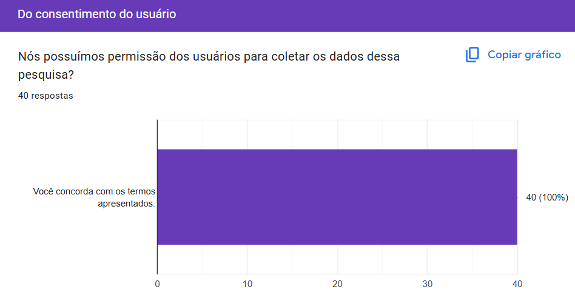
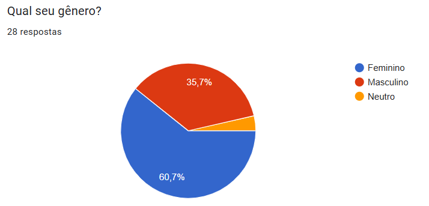
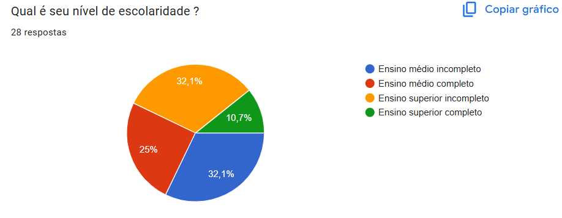
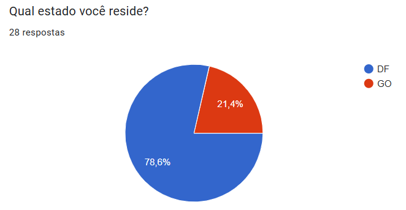
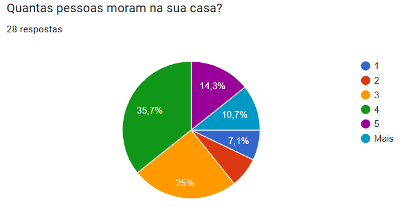
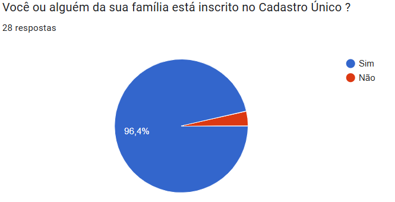
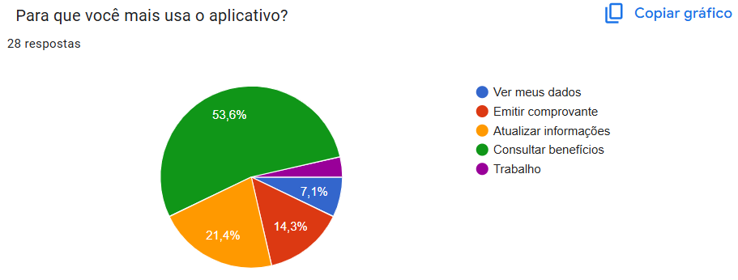
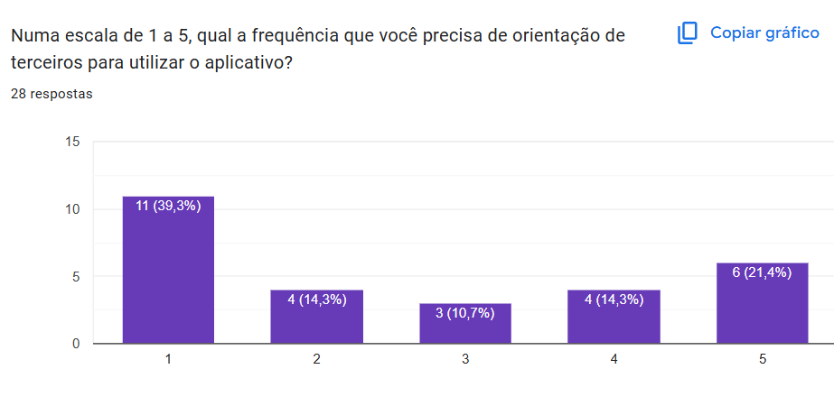

Perfil de Usuário
Funções dos autores
| Nome | Função |
|---|---|
| Amanda Cruz | Criação do documento e desenvolvimento do perfil do usuário |
| João Pedro Costa | Correção de links |
| Julia Gabriela | Revisão geral e criação da tabela de funções |
Introdução
Este artefato tem por fim traçar um perfil de usuário, com o objetivo de compreender as características e necessidades dos indivíduos para os quais o sistema está sendo projetado. Segundo Barbosa e Silva (2021), o perfil de usuário é construído a partir de dados como cargo, função, faixa etária e nível de instrução, com a finalidade de agrupar usuários com características semelhantes. Além disso, Hackos e Redish (1998) destacam que o perfil inclui informações sobre a relação do usuário com a tecnologia e o conhecimento sobre as tarefas a serem realizadas, facilitando a criação de sistemas mais eficientes e alinhados às necessidades reais dos usuários.
Metodologia
A construção do perfil de usuário foi realizada com base em dois métodos principais: o questionário e as entrevistas. Ambos os métodos contribuíram para a definição das características dos usuários e ajudam a garantir que o sistema seja projetado de acordo com suas necessidades, sendo as entrevistas uma forma de validar os dados obtidos no questionário e aprofundar os conhecimentos qualitativos.
Questionário
O questionário realizado obteve o total de 40 respostas. Com isso, todas as informações obtidas a partir desta técnica tiveram autorização dos usuários no que se refere a coleta das mesmas, como mostra a Figura 1, e seus devidos gráficos com as respostas relevantes para o artefato estão presentes nas Figuras 2 a 10.
Figura 1: Consentimento do Usuário

De acordo com a Figura 2, ficaram claras aspectos relacionados ao gênero, em que 60.7% dos usuários são mulheres, formando sua maioria, e os 39% restantes são do gênero masculino ou neutro.
Figura 2: Pergunta 1

Na Figura 3, os resultados em relação a faixa etária dos usuários demonstraram que 60.7% possui entre 20 e 30 anos, destacando que a maior parte tem a idade entre 20 e 25 anos. Sua minoria foi composta por pessoas entre 30 e 40 anos ou mais.
Figura 3: Pergunta 2

A Figura 4 demonstra o nível de escolaridade dos que utilizam o aplicativo. De acordo com o gráfico, 32.1% estão possui o Ensino Superior Incompleto, 32.1% com o Ensino Médio Incompleto, 25% possui apenas o Ensino Médio completo, evidenciando uma divergência não tão grande entre os usuários neste aspecto. O restante é composto por pessoas com o Ensino Superior completo.
Figura 4: Pergunta 3

De acordo com o gráfico da Figura 5, foi possível identificar que 78.6% moram no Distrito Federal e 21.4% moram no Goiás.
Figura 5: Pergunta 4

Entre os usuários, percebe-se, pelo gráfico da Figura 6, que 60.7% dos usuários possuem entre 3 a 4 pessoas morando em sua residência e 14.3% possuem 5 indivíduos. Os 25% faltantes, possuem 1, 5 ou mais.
Figura 6: Pergunta 5

No que se refere ao gráfico da Figura 7, evidencia-se que mais de 95% dos usuários estão ou possui alguém da família inscrito no Cadastro Único.
Figura 7: Pergunta 6

Sobre a frequência da utilização de aplicativos de celular, conforme gráfico da Figura 8, 46.4% dos usuários afirmaram usar todos os dias, 28.6% com uma frequência baixa, 17.9% e 7.1% disseram utilizar de maneira mediana ou nunca/raramente, respectivamente.
Figura 8: Pergunta 7

Na Figura 9, o gráfico mostra que 53.6% utiliza mais o aplicativo com o intuito de consultar benefícios, 21.4% para atualizar informações, 14.3% para emitir comprovantes e 7.1% para consultar os dados pessoais. Menos de 4% disseram que usam a trabalho.
Figura 9: Pergunta 8

A Figura 10 salienta, em uma escala de 1 a 5, a frequência em que o usuário precisa de orientações de terceiros ao usar o aplicativo. Com maior número de usuários, ficou a escala 1, com 39.5%. Em relação aos outros dados obtidos, em ordem, a escala 5, com 21.4%, escala 2 e 4, empatadas com 14.3% e a 3, com 10.7%.
Figura 10: Pergunta 9

Entrevistas
As entrevistas permitiram aprofundar as informações obtidas e validar as conclusões. A análise das entrevistas destacou que:
- Todos os participantes são inscritos no Cadastro Único.
- A faixa etária predominante foi de 19 a 24 anos.
- Todos são estudantes.
- Todos os participantes possuem facilidade de uso de tecnologia, com poucas dificuldades ao utilizar o aplicativo.
- A principal utilização do aplicativo é para consulta de benefícios e atualizações cadastrais, conforme relatado pela maioria dos entrevistados.
Definição do Perfil
É importante atentar-se ao fato de que o questionário foi conduzido com base nos que utilizam ou já utilizaram o aplicativo, assim como a entrevista. As demais respostas não foram consideradas para a definição. Com base nisso, foi elaborado o seguinte perfil de usuários do Cadastro Único.
- Gênero: Predominantemente feminino.
- Idade: Adultos entre 20 e 30 anos.
- Escolaridade: Ensino Médio Incompleto ou Ensino Superior Incompleto.
- Ocupação: Estudantes.
- Localidade: Em maioria no Distrito Federal.
- Condição Familiar: 3 a 4 pessoas por residência.
- Situação: Inscritos ou possuem alguém da família inscrito.
- Atitudes perante tecnologia: Tecnófilos.
- Experiência com tecnologia: Moderada.
- Tarefas Primárias: Consulta de benefícios e atualização de informações.
Conclusão
A combinação dos dados do questionário e das entrevistas permitiu construir um perfil de usuário mais completo e preciso. Com isso, foi possível entender melhor o público-alvo do aplicativo e identificar suas necessidades, garantindo que o sistema atenda de forma mais eficaz às expectativas de seus usuários.
Referências
Barbosa, S. D. J.; Silva, B. S. da; Silveira, M. S.; Gasparini, I.; Darin, T.; Barbosa, G. D. J. (2021). Interação Humano-Computador e Experiência do usuário. Autopublicação. ISBN: 978-65-00-19677-1.
Histórico de Versão
| Versão | Data | Descrição | Autor | Revisor |
|---|---|---|---|---|
| 1.0 | 03/05/2025 | Criação do Documento | Amanda Cruz | Julia Gabriela |
| 1.1 | 06/05/2025 | Ajustando links | João Pedro Costa | Julia Gabriela |
| 1.2 | 26/05/2025 | Adicionando tabela de funções | Julia Gabriela | João Pedro Costa |